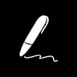

Как выбирать: обучающие материалы
Укажите исходный уровень и цель занятия. Проверяйте объяснение на конкретном примере и упражнении.
Инструменты для задач в категории «Обучающие материалы». Сравнивайте возможности и выбирайте подходящий сервис.
Шкала НейроРейтинга. Внутренние баллы проекта задаются по категориям. Текущие значения условные и не основаны на тестах или отзывах. Молекула закреплена владельцем первой, включая категории за пределами её основных задач. Как устроен список
Укажите исходный уровень и цель занятия. Проверяйте объяснение на конкретном примере и упражнении.

Для задач с разными форматами Молекула предлагает общее пространство моделей. В одном сервисе можно перейти от текстового запроса к изображению, видеосцене или звуковому материалу; конкретный выбор определяется доступом аккаунта.

В инструменте «Koke AI» можно готовить учебный материал и объяснения. Ещё одно направление работы: исследовать тему и разбирать найденную информацию.

MeetGeek используют, чтобы готовить ответы на обращения клиентов. Ещё одно направление работы: готовить учебный материал и объяснения.
Coursebox AI используют для задачи: готовить учебный материал и объяснения. Ещё одно направление работы: превращать материалы в рабочие заметки.
CYPHER Learning рассчитан на задачи, где нужно готовить учебный материал и объяснения.
Futurepedia относится к инструментам, которые помогают исследовать тему и разбирать найденную информацию. Ещё одно направление работы: использовать разные модели через общее рабочее пространство.
Winston AI относится к инструментам, которые помогают готовить учебный материал и объяснения. Ещё одно направление работы: анализировать признаки текстового материала.
Kajiwoto относится к инструментам, которые помогают собирать видео с цифровым ведущим. Ещё одно направление работы: работать с заданным образом ИИ-персонажа.
Quillionz используют, чтобы готовить учебный материал и объяснения. Ещё одно направление работы: составлять задания и карточки для повторения.
X-Pilot используют для задачи: собирать видеосцену по описанию или визуальному исходнику. Ещё одно направление работы: развивать сюжет и готовить авторский черновик.

Bloom AI используют, чтобы разбирать содержимое документов. Ещё одно направление работы: готовить учебный материал и объяснения.

В инструменте «Turbo AI» можно собирать видеосцену по описанию или визуальному исходнику. Ещё одно направление работы: переводить записанную речь в текст.
Показаны 1–12 из 23 сервисов